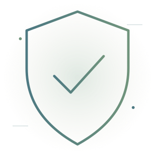

ИНТЕРАКТИВНЫЙ ПЛАКАТ · 2026
Интернет — территория безопасности
Твоя безопасность в сети начинается с тебя. Выбери тему, чтобы открыть отдельную страницу с советами и практическими примерами.

ИНТЕРАКТИВНЫЙ ПЛАКАТ · 2026
Твоя безопасность в сети начинается с тебя. Выбери тему, чтобы открыть отдельную страницу с советами и практическими примерами.
